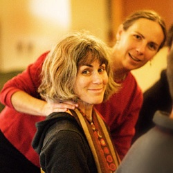

Welcome

Sandra Bain Cushman teaches the Alexander Technique to individuals and
groups in her studio and in retreat settings. The Technique offers a
highly sophisticated approach to mindfulness, movement, and meaning in
our day-to-day lives.
Learn to:
- Direct your awareness
- Calm your nervous system
- Understand your upright design and free balance
- Develop confidence in your physical, emotional, and mental responses
- Perform better at everything you do
Elite actors, athletes, musicians, and performers have applied the
Technique for over a hundred years. Sandra delights in bringing the
benefits of this rich and rewarding work both to those who perform
professionally and to people in all walks of life. One of her
specialties is working with children and teenagers (listen).
|
home
about Sandra
philosophy
articles & audio
calendar
links
Photographs thanks to
Ingrid Pape-Sheldon
www.pape-sheldon.com
|